مطبخ أم أسيل
عندما تتقن فن الطبخ .. أنت حتماً تعرف كيف تعد مائدة حياتك وكيف تطهو رغباتك .. متعتك تبدأ بالإعداد للمتعة .. من إحضار لوازم أطباقك ومد مائدة إنتظارك تسعدني زيارتكم لقناتي على اليوتيوب 😘💖 https://www.youtube.com/channel/UCkyI-CMVXGvp8zfpedHOW3w
-
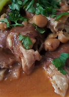
شوربة كرعين ،كوارع أو مقادم بطريقة سهلة وصحية
خروف منظفة و مقطعة ، بصل مرحية ، طماطم مرحية ، ثوم مرحي ، ملح حسب الرغبة ، كمون ، كمون ، كركم -
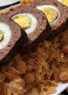
شخشوخة السيار الجزائرية مع رولي اللحم
شخشوخة ، زيت ، لحم مفروم ، بيض ، خبز مرحي ، ملح ، فلفل اسود ، بصل صغيرة مقطعة ناعم -
.jpg)
تارتيلات بطمينة الغرس الجزائرية بحشو مميز
سميد متوسط ، غرس او عجوة منقية ، ملح ، زبدة بحرارة الغرفة ، حليب ، كريمة شونتيه بودر ، طحينة -
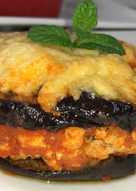
مسقعة باذنجان بالدجاج
باذينجان حجم كبير ، طماطم كبيرة ، صدر دجاج ، ملح ، زيت زيتون ، فلفل اسود ، ثوم ، بصل -
.jpg)
كروكي جزائري بالفلان
بيض ما يعادل خمسة بيضات ، سكر عادي ، زيت ، مايزينة او نشاء ، خميرة حلوى ، فانيليا للتنكيه ، فلان 50غ ذوق فانيليا او اي نكهة تحبو ، فرينة اي طحين -
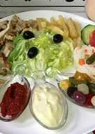
شاورما منزلية بطريقة مميزة
صدر دجاج ونصف ، زبادي اي ياغورت طبيعي ، خردل او موطارد ، عصير ليمون ، ملح حسب الذوق ، توابل شاورما ، كمون ، زعتر بري -
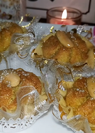
حلوى الدزيريات الجزائرية بجوز الهند
، فرينة اي طحين ، زبدة توريق ذايبة و باردة ، ملح ، منكه ماء زهر ، ماء لجمع العجين ، نواد كوكو ناعم (جوز الهند) ، -
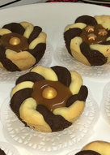
ورود الصابلي بنكهة الفانيليا و الشوكولا
زبدة بحرارة الغرفة ما يعادل ملعقتين كبار و نصف ، سكر ناعم ما يعادل 3 ملاعق كبيرة ، مايزينة او نشا ما يعادل 3 ملاعق كبيرة ، خميرة حلوى 5غ ، صفار بيض ، كاكاو 15غ ، فانيليا للتنكيه ، نكهة الشوكولا اختياري -
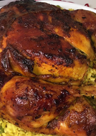
دجاج محمر مع البرغل في كيس الشواء
دجاجة ، زيت زيتون ، زبدة ، فلفل احمر حلو او بابريكا ، كركم ، توابل خاصة بالدجاج للحشوة ، زنجبيل ، فلفل اسود -
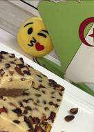
حلوة طحينية، حلوة الترك
طحينة ، طحين اي فرينة ، سكر ناعم ، فانيليا للتنكيه ، شوكولاته تويسكو او نيسكويك اي بودرة او كاكاو -
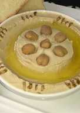
سلطة الحمص أو المْسَبَّحة
حمص مسلوق مع الملح ، طحينة ، عصير ليمون ، جليد ، زيت زيتون ، كمون للتزيين -
المحاجب الجزائرية بالفرينة أو الطحين دون دلك او تعب
، فرينة أو طحين ، ملح ، خميرة حلوى ، ماء ، ، بصل مقطع ناعم ، فلفل حلو مقطع ناعم -
.jpg)
دجاج في قوالب السلكون
صدر دجاج ، ملح ، فلفل اسود ، ثوم مرحي ، خبز مرحي اي شابلير ، زيتون اخضر منزوع النوى ، زيت ، بصل مرحي -
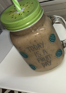
مشروب الحليب مع الموز و التمر
حليب ، موز ، تمر منزوعة النوى او قطعة غرس او عجوة -
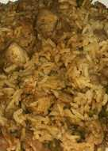
أرز في كيس الشواء
ارز مغسول و منقوع نصف ساعة ، ماء ، صدر دجاج مقطع مكعبات صغيرة ، بازلاء مجمدة ، حمص مطبوخ ، زيت ، معجون طماطم ، ملح حسب الرغبة -
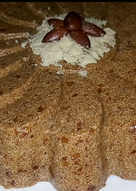
طمينة الغرس أو الكعبوش الجزائري
سميد متوسط (دقيق) ، ملح ، غرس او تمر او عجوة تكون منزوعة النواة ، زبدة او مارغرين ، للحشو حلوة الترك او الشامية ، حلوة الترك او الشامية -
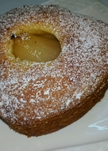
كيكة الاجاص الهشة
اجاص 6 حبات ، سكر 400غ ، ماء ، عصير ليمون ، زبدة بحرارة الغرفة ، سكر 200غ ، بيض ، خميرة حلوى 10غ -
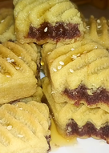
مقروض الكوشة الجزائري
ونصف سميد او دقيق متوسط ، فرينة ، ناقصة اصبع زبدة أو سمن نكملها بالزيت ، ملح ، ماء زهر لجمع العجين نضيفها تدريجيا ، للحشو تمر او عجوة او غرس منقي و معجون بشكل جيد و منكه ، عسل ثقيل و سمسم للتزيين -
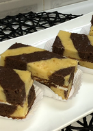
مسكوتشو بشكل جديد
بيض ، سكر حبيبات 150غ ، حليب 240 ملل ، زيت 240 ملل ، خميرة حلوى 10غ ، طحين (فرينة) 300غ ، كاكاو ، فانيليا للتنكيه -
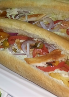
خبز الصامون، الفينو
طحين، فرينة ، خميرة خبز فورية ، سكر ، خل ، ملح ، بيضة ، زبدة 50غ ، حليب دافي 360 ملل